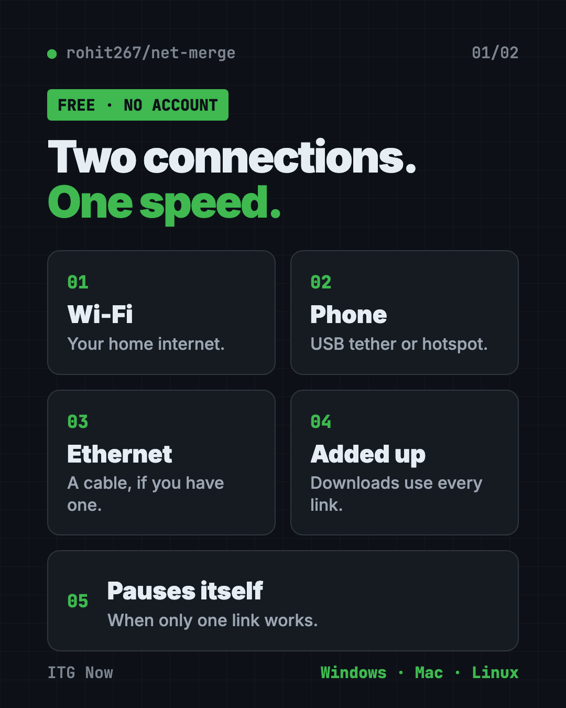
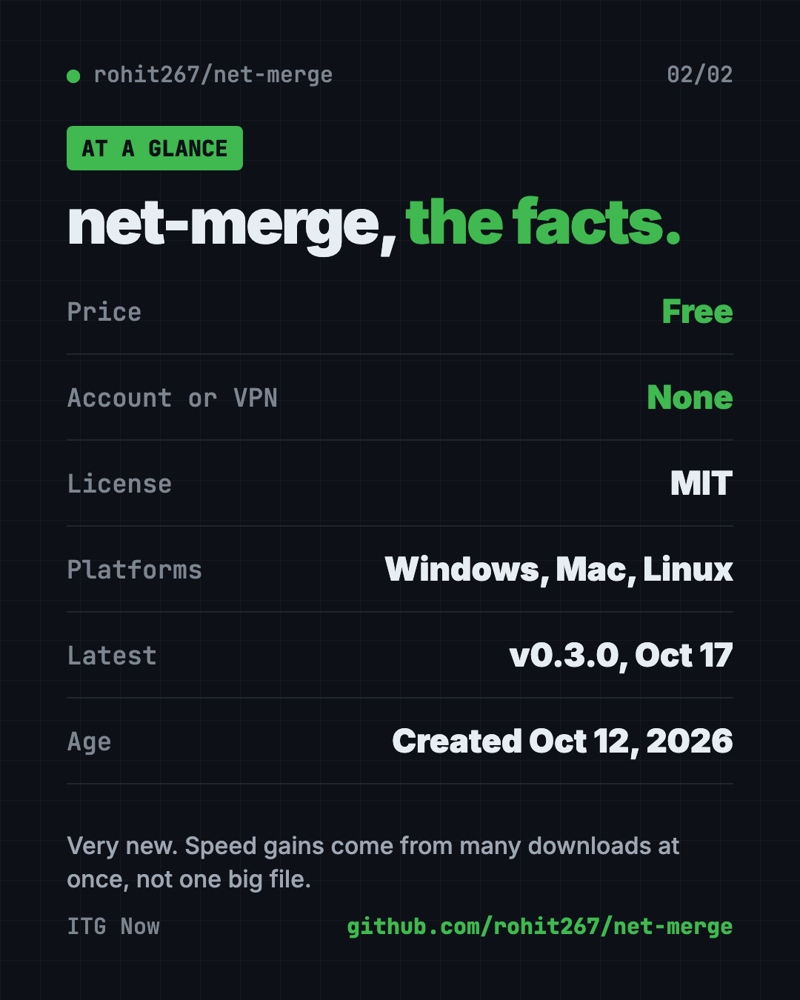

net-merge: Combine Wi-Fi and Phone Internet, Free (2026)
- Published 18 Oct 2026
- 7 min read
- License MIT
- By the ITG Now team
In this guide (14)
- Key takeaways
- Can you use two internet connections at once?
- What is net-merge?
- How does net-merge work?
- How to use net-merge (real examples)
- Does net-merge always make internet faster?
- net-merge at a glance
- Who should use net-merge?
- How to add a second connection
- How to install net-merge
- Let Claude or Codex set it up for you
- What are net-merge's limits?
- Our take
- FAQ
net-merge is a free app that lets you use two internet connections at once. It combines Wi-Fi and hotspot internet speed, so downloads get the speed of both added up.
It runs on Windows, Mac and Linux. You don't need an account, a server or a VPN. Here's when it helps, when it doesn't, and how to install it.
Key takeaways
- Free and open source. MIT license. The README says there is no account, no server and no VPN.
- Adds your connections together. Wi-Fi, Ethernet cable and phone hotspots can all work at once.
- Best for many downloads. Games, updates, browsers and cloud uploads speed up. One single big file does not.
- Very new. The repo was created on October 12, 2026. The latest release is v0.3.0 from October 17.
- Needs admin rights. Installing asks for your computer's admin permission.

Can you use two internet connections at once?
Yes, with net-merge you can use two internet connections at once.
What is net-merge?
net-merge is a small app that sits in your menu bar (Mac) or system tray (Windows). It looks at every internet connection on your computer and shares your traffic between them.
Its makers say you'll get "the speed of every connection added up." A connection here means any way your computer reaches the internet: Wi-Fi, a cable or a phone.
How does net-merge work?
Think of two checkout lines at a store. One line is slow. If you can use both, you finish faster.
net-merge hands each new connection your apps open to one of your links. When an app opens many connections at once, they spread across all your links. Faster links get more. A link with no internet gets none until it works again.
If net-merge crashes, the README says your internet keeps working. That's a nice safety net.
How to use net-merge (real examples)
- Download a big game. Steam opens many connections, so Wi-Fi plus a phone hotspot can finish sooner.
- Run system updates. Updates often download in parts, which suits net-merge.
- Upload to Google Drive. Cloud uploads are on the README's "good for" list.
- Slow home Wi-Fi. Use two internet connections at once by adding your phone's hotspot while you wait on a download.
- Use a download manager. Tools like IDM open many connections, so they gain the most.
💡 Tip: Run the command
net-merge statusto see how many connections each link carries.
Does net-merge always make internet faster?
No, and that's the most important thing to know.
- It helps when many connections run at once.
- It doesn't help one single connection. The README says one connection always uses one link, so one big file from one place will not speed up.
- It doesn't help two links from the same router. Wi-Fi and Ethernet plugged into one router share one internet line.
You gain speed when each link has its own path, like home Wi-Fi plus a phone on mobile data.
The README shares one test: Wi-Fi plus an Android USB tether plus an iPhone hotspot, with 9 downloads at once, reached 232 to 303 Mbit/s. The fastest link alone gave about 121 Mbit/s. That's the author's own test, so your results will differ.
Heads up: A phone uses its mobile data while net-merge runs. Quit net-merge when you do not want that.
net-merge at a glance
| Price | Free |
| Account or VPN | None |
| Platforms | Windows, macOS, Linux |
| License | MIT |
| Latest version | v0.3.0 (October 17, 2026) |
| Best for | Many downloads at once with two or more real connections |

Who should use net-merge?
- Gamers with big downloads and a hotspot to spare.
- Students on slow dorm or shared Wi-Fi.
- Remote workers who upload large files to the cloud.
- Anyone with a second connection sitting unused.
It's not for you if you only have one connection.
How to add a second connection
net-merge needs two or more working connections. The README suggests Wi-Fi plus a phone, an Ethernet cable or a second Wi-Fi.
- Windows and Linux: plug in your phone and turn on USB tethering (Android) or Personal Hotspot (iPhone).
- Mac with iPhone: plug it in, tap Trust, then turn on Settings, Personal Hotspot, Allow Others to Join.
- Mac with Android: needs a separate app called TetherKit, because macOS cannot use Android USB tethering by itself.
How to install net-merge
These are the README's official steps. Read them first, because the install needs admin rights.
Heads up: The repo is under a week old. The install needs admin rights, and the Windows installer is not signed. If you are unsure, wait a few weeks before installing.
The safest ways come first. On a Mac with Homebrew, copy and paste this:
brew install rohit267/tap/net-merge && sudo "$(brew --prefix)/bin/net-merge" install && net-merge tray
Prefer a normal installer? On Windows you can download net-merge-setup.exe from the GitHub Releases page. Windows may warn because the app is not signed yet. You would click More info, then Run anyway.
The quick scripts come last. They download a script and run it right away, so read the README before using them. On Mac or Linux, copy and paste this into Terminal:
curl -fsSL https://raw.githubusercontent.com/rohit267/net-merge/main/install.sh | sh
On Windows, copy and paste this into PowerShell:
irm https://raw.githubusercontent.com/rohit267/net-merge/main/install.ps1 | iex
To start it every time you sign in, run net-merge autostart on.
Let Claude or Codex set it up for you
Claude Code and OpenAI Codex are AI helpers that can run setup steps on your computer. You paste a request, it does the steps, and you approve each one.
Copy and paste this:
Please help me install net-merge from github.com/rohit267/net-merge.
1. Check whether I use Windows, Mac or Linux.
2. Read the README and tell me what the install script does before running anything.
3. Install it the safest way the README allows.
4. Help me add my phone as a second connection.
5. Show me how to check that both connections are used.
Then try asking:
Why isn't net-merge speeding up my download? Help me check with net-merge list.
Show me how to uninstall net-merge cleanly.
💡 Tip: Only say yes to steps you understand. Ask "what does this do?" before approving.
What are net-merge's limits?
- Brand new. Created October 12, 2026, so expect rough edges.
- Not for one big file. One connection uses one link.
- Admin rights needed. The install changes your network setup.
- Android on Mac needs TetherKit.
- Same router, no gain. Wi-Fi plus Ethernet from one router share one line.
Our take
net-merge solves a real problem in a simple way. If you've got a second connection and lots of downloads, it's a free way to use it.
What we like:
- Free, with no account or VPN.
- Works on Windows, Mac and Linux.
- Honest README that says when it will not help.
- Pauses itself when only one connection works.
What to watch for:
- Very young project.
- Speed claims come from the author's own test.
- The install needs admin permission, so you'll see a prompt.
Looking for more free tools? Try our Handy voice typing guide or Mole, a free Mac cleaner.
FAQ
Is net-merge free?
Yes. net-merge is free and open source under the MIT license.
Can I combine Wi-Fi and a phone hotspot?
Yes. That is the main use. Plug in your phone with USB tethering or turn on a hotspot, and net-merge adds it in a few seconds.
Does net-merge need a VPN or account?
No. The README says there is no account, no server and no VPN.
Will it speed up one big download?
No. One connection always uses one link, so one big file from one place does not get faster.
Does net-merge work on Mac?
Yes. It works on Windows, macOS and Linux. A Mac with an Android phone also needs the TetherKit app.
Get net-merge: github.com/rohit267/net-merge
Keep reading

Folia: Free Animated Lyrics Music Player
Folia is a free animated lyrics music player that shows full-screen moving lyrics for your local music, Navidrome and more. What it does and how to start.

ArtCraft: Free AI Video and Image Studio
ArtCraft is a free AI video and image studio. Build your scene in 2D or 3D first, then let an AI model make the image or video. Mac and Windows.

REA: Reverse Engineer Anything With Your AI Agent
REA (Reverse Engineer Anything) lets an AI agent look inside an app and explain how a feature works, with proof. What it does, what it misses, and the risks.